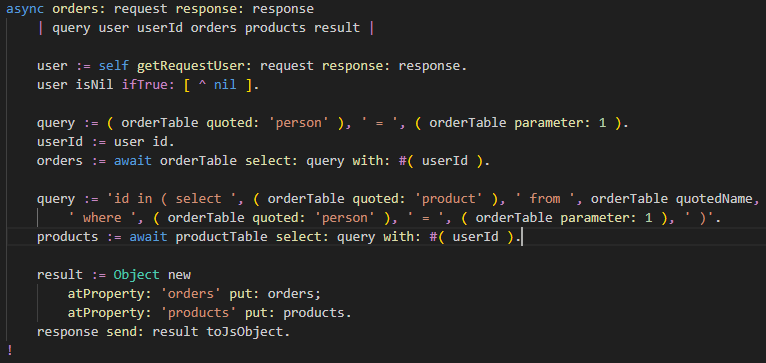

The products API is quite trivial, so we'll explain the orders API here in stead.
In the file
src/ShopServer.st , find the method
async orders: request response: response :

This method will return all orders from the logged-in user with their products.
Two arrays will be returned as properties of a basic
Object .
The URL for requesting orders has the simple format:
localhost:3000/api/orders .
First the logged-in user is retrieved from the session object.
If not present, an error 500 "Not logged in" is returned to the client.
Then all orders placed by this user are selected from the database using the user id.
(Query construction is a bit complicated because of different styles for quotation and parameters
by different databases. This will be simplified in a later release.)
Now all products are selected, who's id's appear in the orders placed by the current user.
Lastly, the selected orders and products are placed as properties in a basic
Object
and sent back to the web client in JSON format for display.
Congratulations
You now know how to make a Node.js server app in SmallJS!
For your own projects, just make a copy of this app and modify.
If you have suggestions for framework improvements, please create issues on GitHub.